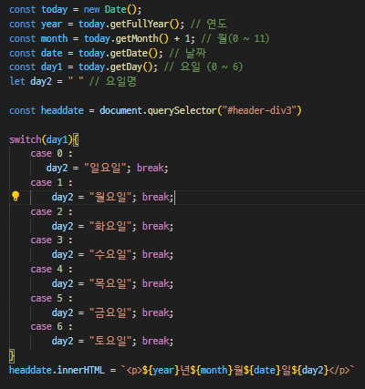
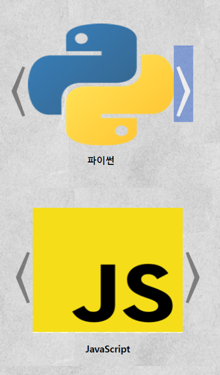

Project2 - 웹페이지 만들기
20242936호 6월3일 창간
xxxx년xx월xx일수요일
소개
프로젝트 2는 1학년 1학기 HTML, CSS, JavaScript 를 공부하는 수업인 웹스크립트 프로그래밍 수업에 진행한 프로젝트 입니다. 저의 프로필을 소개하는 웹 페이지를 만드는 과제로, 현재 만들고있는 페이지 입니다. 제가 만들고 있는 웹 페이지는 보 시다시피 신문을 컨셉으로 하여 제작 중입니다. 웹페이지의 내용에는 저의 스킬, 제 가 할 수 있는것들, 경험해본 프로젝트들, 마지막으로 희망직무에 관한 내용이 담겨 있습니다. 이 페이지 에서는 웹 페이지에서 활용된 자바스크립트 요소들에 대해 설 명 드리겠습니다.
스킬
사용할 수 있는 언어 및 내가 가진 스킬 설명, 텍스트 구획 오른쪽에 캐러셀을 활용.프로젝트
경험해본, 경험할 예정인 프로젝트들을 설명.희망직무
미래의 희망 직무를 졸업 후의 여러가지 계획에 맞추어 설명.
JS 활용 요소 - 날짜표시
현재 웹페이지의 상단에는 전체 제목과 그 밑에 신문의 호수, 창간일, 년월일이 적혀져 있습니다. 여기서 날짜를 표시하는 부분을 수업시간에 배운 자바스크립트를 활용 하여 항상 현재 날짜와 요일을 표시하도록 구현하였습니다.

JS 활용 요소 - 캐러셀
현재 웹페이지에서 수업시간에 배운 캐러셀을 활용하였습니다. 사용된 캐러셀은 총 두가지 입니다. 첫번째로는 이미지 옆에 화살표가 있고, 화살표를 클릭할 시 다른 이미지로 전환되는 캐러셀 입니다. 이 캐러셀은 스킬을 소개하는 부분에서 활용 하 였습니다. 두번째 캐러셀은 버튼형 캐러셀입니다. 이미지 위에 최대 1 ~ 6 번의 버튼 이 존재하며, 버튼을 누를시, 해당 이미지와 설명이 교체됩니다. 이 캐러셀은 프로젝 트 1 을 소개하는 페이지에서 활용하였습니다.
